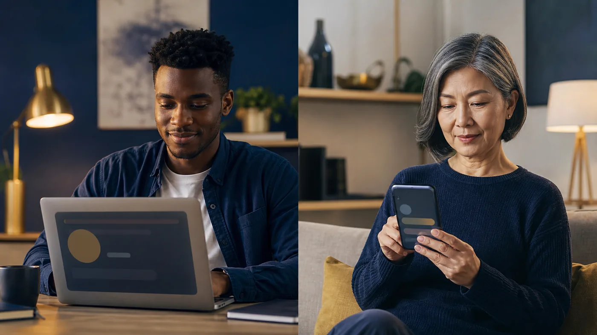

Request
Tell APS the document type, requested notarial act, timing, and signer count.
Texas Remote Online Notary
Complete an eligible notarial act in a live audio-video session with a Texas-commissioned online notary—supported by clear preparation, secure identity technology, and a human review of your request.

Device access
Use a compatible phone, tablet, laptop, or desktop computer you can control throughout the session. Charge it, allow camera and microphone access only for the secure platform, and choose a quiet, well-lit place.

How it works
Tell APS the document type, requested notarial act, timing, and signer count.
Confirm the receiving party accepts RON and gather your device, document, and acceptable ID.
Complete the platform's credential analysis and identity-proofing steps.
Join the commissioned notary by live audio-video for the required act.
The notary completes the electronic certificate and the authorized delivery workflow proceeds.
Identification
Credential analysis uses approved technology to evaluate a government-issued identification credential. Identity proofing may include dynamic knowledge-based authentication (KBA) based on public and proprietary data.
The third-party provider creates and evaluates the questions. The notary does not choose them, see your answers, provide answers, or override the result.
Understand ID verification and KBA →An unsuccessful result is not a character judgment. APS does not speculate about why it occurred and cannot bypass it. Follow the platform's neutral instructions. A permitted retry, correction of an input error, or an in-person option may be available; no result is promised.
Location & eligibility
The signer may be elsewhere, but the Texas online notary must be physically located in Texas during the act. The document, receiving party, technology, signer circumstances, and applicable law must also allow remote notarization. APS reviews logistics but cannot guarantee eligibility before the required information is assessed.
A clear professional boundary
APS can explain appointment steps, technology, identification procedures, service fees, and secure document handling. The notary cannot draft or change a legal document, choose an acknowledgment or jurat for you, explain legal consequences, or tell you whether to sign. Ask the document preparer, receiving party, or qualified attorney for those decisions.
Frequently asked questions
Often, yes, when the platform supports it and the camera, microphone, browser, and connection work reliably. A larger device may be easier for a long document.
Have an acceptable, unexpired government-issued photo ID ready for the secure credential-analysis flow. Do not email an ID image or place its details in a general form.
Not automatically. A jurat requires signing in the notary's presence; an acknowledgment follows a different procedure. Follow the receiving party's instructions or wait for procedural direction.
Witness requirements depend on the document, transaction, platform, and applicable law. Disclose the need during scheduling so APS can review it.
Texas online notarization requires an audio-video record and electronic records under applicable requirements. The secure platform manages those records.
No. Acceptance is controlled by the receiving party and applicable law. Confirm acceptance before the appointment.
Never include SSNs, ID images or numbers, banking details, passwords, access codes, KBA answers, or document contents.
Official and practical resources